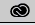
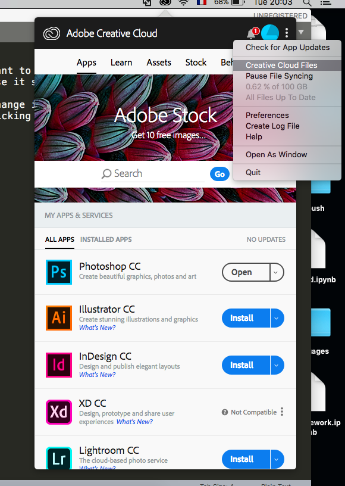
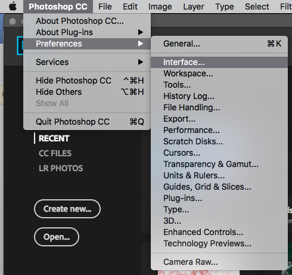
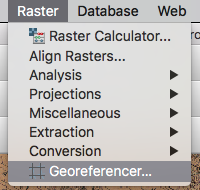
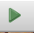
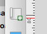

walkthrough
If Photoshop is not in English on your computer
(and you're sick of it.)
Fun fact: it is extremely annoying to change it. First, quit Photoshop. Then, open the Adobe Creative Cloud App! (If you're on a Mac, it means clicking on the icon that looks like this: )
Then click on the three dots > preferences > Creative Cloud > App Language and change it to whatever suits your needs - maaaybe English?
Then, it's an unecessary mess.
Still in that little window, go back to where you can see all your apps, and click on Install. Yes, we're reinstalling Photoshop.
Then, open Photoshop, go under Photoshop CC > Preferences > Interface
Change the language in the dropdown menu (you're wondering "oh, why didn't we do this first and went through all these steps" and the answer is "because turns out that you didn't have that other language option in the dropdown menu before you did all of this.")
Then re-start Photoshop and hopefully-fingers-crossed it is now in English.
And you can do the same thing for Illustrator. The joy.
Off to Georeferencing
First, the goal of the assignment: georeference an old image, so we can get the now long gone Harlem Creek on a modern map of Manhattan.
Download the data - hopefully you already have it - from the GIS Drive, open QGIS, create a new project. Open the google-satellite and the google-roads tif files by dragging them into QGIS.
Eventually, you'll want to change that base map though! For that, you can use the week-1 google drive folder, and also download additional data from, for example, NYC Open Data. If you have some space on your hardrive, you can take a stab at the Building Footprints data, and export it as a shapefile. Just know that it takes forever, a weird blank new tab will show up and load, and then eventually after like 7 minutes, you'll see that a zip file is being downloaded.
But backing up a bit.
So now that you have your two .tif files open in QGIS, let's georeference things.
Start by clicking on Raster > Georeferencer.
If the Georeferencer does not show up, it's because everything is a mess, and you'll need to click on Plugins > Manage and Install Plugins > search for Georeferencer > double click on it > close the window, then try clicking on the Raster menu again.
And now it should probably appear.
Click on File > Open Raster > Select the map- 1845.jpg file. A new window should pop up, asking you to select a coordinate reference system. You'll want to select ESPG:4326, then click Ok.
Tada, you have the image ready to georeference.
Remember that you want to put the now disappeared Harlem Creek on a modern map! So you can start georeferencing by adding points in the corners of your image, but also most specifically around the creek itself, so your result can be as precise as possible.
Sidenote: the old 8th Avenue is now Central Park West, and turns into Frederick Douglass Boulevard after Central Park. So with that in mind, you can pull up Google Map in your fav web browser (jk, in Google Chrome), and you can maybe start with geocoding the corners, like we did in class.
Which means, roughly:
- 8th avenue and 75th st
- 8th avenue and 121th st
- 3rd avenue and 75th st
- 3rd avenue and 121th st
For the first datapoint, go to Google maps, go to Central Park West and 75th st, right click > What's here > Click on the element that just popped up once more, so you can see the lat/long of the location better.
Go back to the Georeferencing window, click on the button that looks like this , and find 75th and 8th av on the image. Now in the new window, you are going to copy/paste the lat/long you got from Google Maps. But you'll need to copy/paste these numbers in reverse order. So the -73.whateverwhatever goes in the X/East box, and the 40.blah goes in the Y/North box.
Now that you have a dot for one location, do the same thing all over again many, many times. Choose points around the Harlem Creek - also, midtown 4th Avenue is now Park Avenue, according to a HuffPost article
Once you have a few dots, click on the golden wheel button to get the Transformation Settings window to pop up > Change the transformation type to Polynomial 1 > Resampling method to Cubic Spline > Target SRS to ESPG:4326 > Change the name of the "output raster" by clicking on the 3 dots on the right and save it in a convenient location (just save it in the same folder, that will be easier) > Check the "Use 0 for transparency when needed" checkbox > Check the "Load in QGIS when done" box > Click Ok
Click the green button  that is probably supposed to look like a "Play" button.
Right click on your new layer > Properties > Symbology > in the Color Rendering section change the Blending Mode to Multiply.
You have a new, wonderfully geocoded layer in QGIS, and make sure that it is somewhat accurate, otherwise think about maybe adding more points!
Now before you go further, let's think about that basemap!
You can drag all the things you want to be on your basemap in your current QGIS project. Style them a bit, and before you export your map, deselect the google_satellite and google-roads layer. Note that you might now want the blending mode of the georeferenced layer to be multiply anymore, and might want to return it to normal, otherwise you probably won't be able to see anything in Illustrator.
You can export your whole project using the print composer - make sure you're slightly zoomed in on the Harlem Creek before you click on it! - , so click on New Print Layout > click on the thing that looks like this . On the right, under Layout, change the Export Resolution (under Export Settings), to 72 dpi > under Item Properties you can go under "Position and Size" and change the width to 900 px (but click on the lock to make sure height and width will resize accordingly) > export as pdf.
Moving on to Illustrator
Open your file! You might get an error saying that an image was unrecognized, just ignore it I guess.
You should probably release the multiple clipping masks (Object > Clipping Mask > Release as times many as you need) You can select the pen tool (it looks like this ) and draw the shape of the Harlem Creek - you might want to draw the stroke only.
You now have a cool shape, but everything else looks super messy. You can delete the image! It might take a few clicking and deleting, just so you know.
You can go crazy with styling, make it look good, add legend, scale, title, explanatory text, etc. Basically make it look wayyyy better than this:

T H E E N D .
✨ 🗺️ ✨